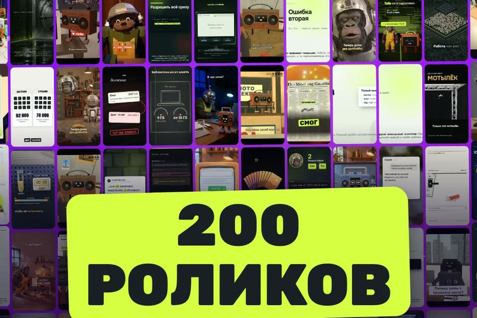
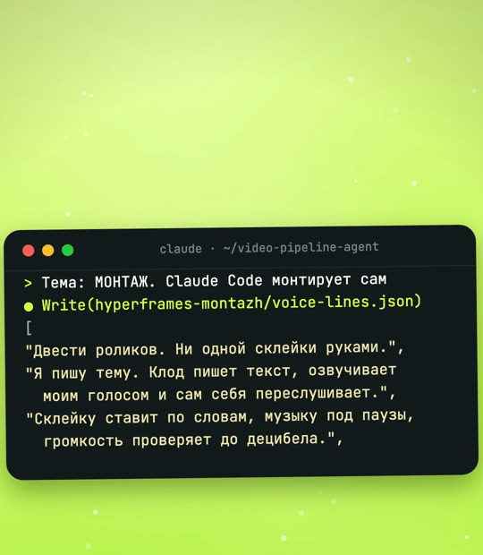
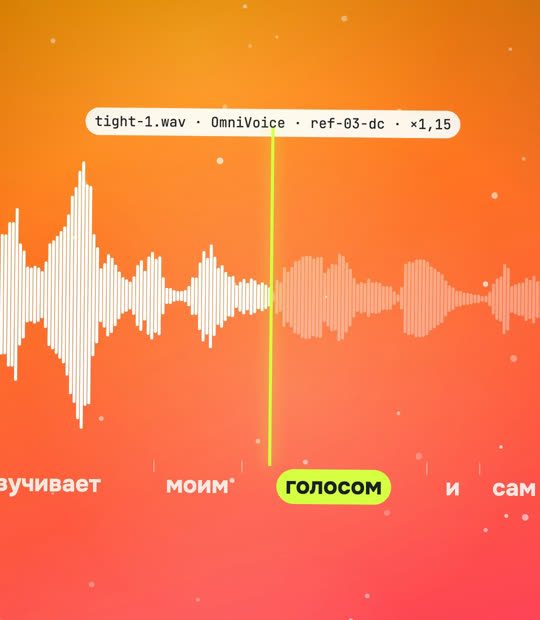
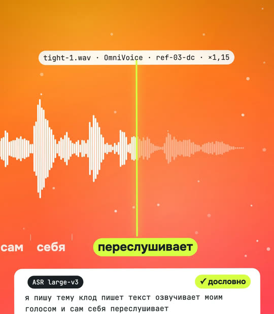
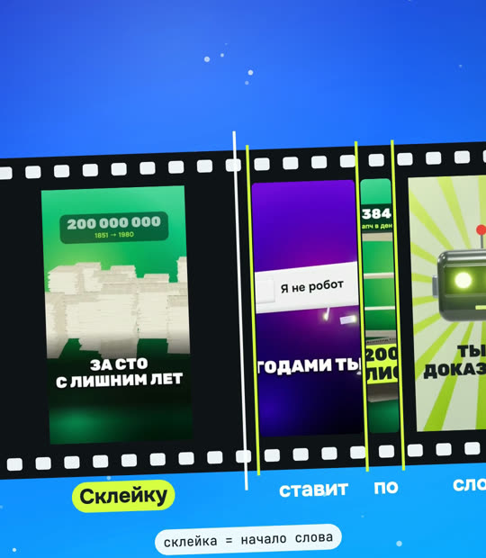
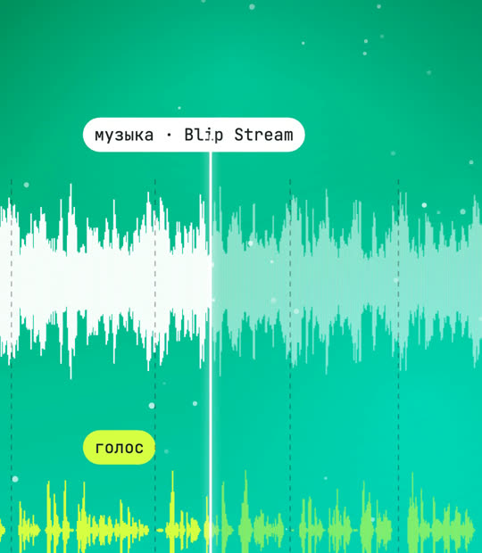
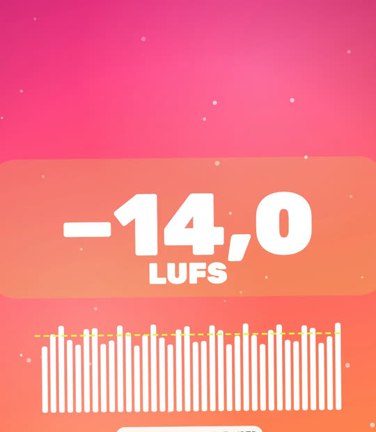
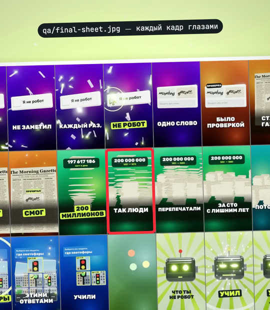
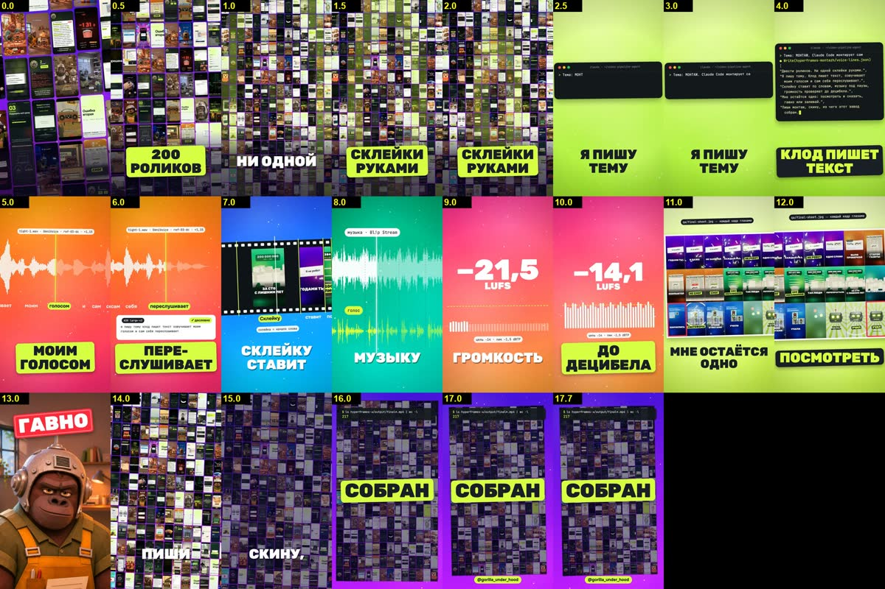
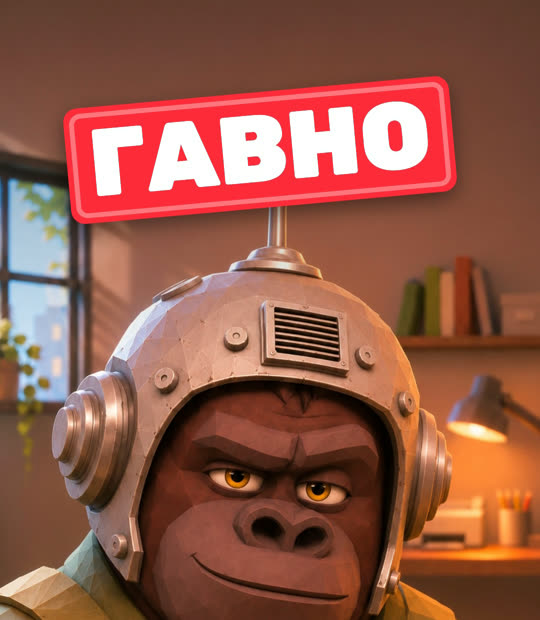

Из чего собран наш завод роликов
Двести с лишним роликов, и ни один мы не монтировали руками. Ниже семь станций, через которые проходит каждый ролик: что на них делает Claude Code и какая проверка стоит вместо рук. В конце открытый стартовый набор, чтобы собрать свой.
- на своём Mac
- голос только свой
- финал решает человек
К ролику «Двести роликов. Ни одной склейки руками» · обновлено 11 ноября 2026

Наш рабочий движок не выложен: он вырос из сотни ролик-папок и без них не поедет. Для своего завода есть урезанная, но рабочая копия, «стартовый набор» из «Фабрики рилсов». Нужны Mac на Apple Silicon и подписка на Claude Code.
Семь станций одного ролика
Все кадры ниже из ролика «МОНТАЖ». В нём завод показывает сам себя: каждый план — настоящий файл, который получился по пути. Я на этом пути делаю две вещи: пишу тему и в конце смотрю.
- ЧеловекТемаодна строка
- Claude CodeСтанции 1–7текст, голос, сборка, проверки
- ЧеловекПросмотр«гавно» или «заливай»

1. Текст: тема превращается в реплики
Я пишу тему одной строкой. Claude Code раскладывает её на 4–6 коротких реплик и кладёт в voice-lines.json. Первая реплика — хук, последняя — кодовое слово. Сценарий я читаю до сборки: переделать текст дешевле, чем готовый ролик.
Проверка вместо рук: правила в CLAUDE.md проекта. Ролик до 40 секунд, хук в первую секунду, один пример. Слова, которые синтез стабильно читает плохо, заменяются ещё в тексте.

2. Голос: мой клон, по четыре дубля
Озвучка идёт локально через OmniVoice по образцу моего голоса. Каждая реплика — четыре дубля с разными сидами: синтез иногда глотает слово или обрывает хвост, и из четырёх почти всегда есть чистый.
Потом дубль поджимается: темп ×1,15 через rubberband с сохранением тембра, паузы длиннее 0,35 с сокращаются до 0,25 с, между репликами 0,15 с. Без этого синтез звучит сонно.

3. Слух: завод переслушивает сам себя
Каждый дубль прогоняется через распознавание речи Whisper large-v3. Берётся тот, где текст совпал слово в слово, первое слово на месте и хвост не обрезан. Отчёт выглядит так:
## 1. Я пишу тему. Клод пишет текст, озвучивает моим голосом и сам себя переслушивает.
- выбран `1-s11.wav` 4.87 с, дословно=True, хвост=True (-23.8 dB)
- ASR: Я пишу тему. Клод пишет текст, озвучивает моим голосом и сам себя переслушивает.Распознавание по обработанному дублю заодно даёт время каждого слова. На нём держится всё дальше: субтитры по словам и склейки.
Чего эта проверка не видит: ударений. В этом самом ролике синтез сказал «гАвно», а распознавание честно записало «гавно» и поставило галочку. Ошибку услышал человек. Лечится не знаком ударения (он даёт акцент), а написанием: в синтез ушло «гавнО», на экране осталось прежнее слово.

4. Склейка: по началу слова, а не на глаз
Смена плана ставится ровно на начало слова из таймингов станции 3. Крупные слова на экране появляются по одному в момент, когда звучат. Сцена — HTML-страница, где кадр зависит только от времени, поэтому рендер можно повторять сколько угодно и проверять любой кадр отдельно.
Проверка вместо рук: кадры рендерятся покадрово через браузер без окна. Пока не готов звук, видно стоп-кадры: наложения, обрезанный текст и пустые места ловятся до полного рендера.

5. Музыка: ниже голоса и проседает под словами
Трек берётся под CC BY с указанием автора, и у каждого ролика свой. Мы ведём журнал использованных треков, чтобы музыка не повторялась подряд. Огибающая голоса считается из той же дорожки, и под словами музыка уходит ниже. Вжухи стоят на склейках, щелчки на выделенных словах.
Проверка вместо рук: распознавание ещё раз, уже по готовому миксу. В «МОНТАЖЕ» первый микс дал «ставят / паузу / проверяют» вместо правильных слов. Виноваты оказались щелчки на стыках киноленты, которые ложились на начала слов. Их убрали, распознавание снова стало дословным.

6. Громкость: до децибела
Итог приводится к −14 LUFS линейным усилением, пиковый ограничитель срабатывает редко. Замер — стандартный фильтр ffmpeg. У «МОНТАЖА» вышло −14,1 LUFS, истинный пик около −3,7 dBFS.
ffmpeg -hide_banner -nostats -i output/final.mp4 -af ebur128=peak=true -f null - 2>&1 | tail -12Строка I: около −14 LUFS и Peak: ниже −1 dBFS.

7. Глаза: контакт-лист до просмотра
Из готового MP4 собирается лист кадров: первые три секунды через 0,5 с, дальше через секунду. Claude Code смотрит на него как на картинку и чинит то, что видно.
ffmpeg -i output/final.mp4 -vf "fps=1,scale=270:-2,tile=6x3" -frames:v 1 sheet.jpgВ «МОНТАЖЕ» лист поймал пять вещей: штампы закрывали морду Горо, сверху была чёрная полоса, терминал обрезался слева, белый текст терялся на лаймовом фоне, контакт-лист заезжал под субтитры. Ещё один замер считает пустой кадр по самому MP4: у этого ролика 0 пустых из 36 проверенных.


И восьмая станция — человек
Зелёные проверки значат только, что файл технически цел: слова на месте, громкость в норме, кадр не пустой. Смешно ли, понятно ли, не торопится ли голос, проверки не знают. Поэтому финал всегда один: я смотрю ролик целиком и говорю «гавно» или «заливай». Без этого ничего не публикуется.
Свой завод: первый ролик за 3 шага
Стартовый набор — урезанная копия нашего конвейера из «Фабрики рилсов». В нём те же станции: сцена по словам, ASR-сверка, сведение, рендер и QA. Первые два шага обходятся без голоса: вместо слов гудки.
Скачайте набор и поставьте зависимости
Компилятор сцены, окружение пайплайна и шрифты.
git clone https://github.com/ilyautov/gorilla-guides
cd gorilla-guides/multcd starter
# Компилятор сцены
npm install # ставит typescript 5.9.3 в node_modules/
# Окружение пайплайна: ASR, рендер, звук
python3.11 -m venv .venv
.venv/bin/pip install -r requirements.txt
.venv/bin/playwright install chromium # headless-браузер для рендера
export PY=$PWD/.venv/bin/python
# Шрифты (без них сцена тоже работает, но рисует системными)
./make.sh fontsВ starter/ появились node_modules/, .venv/ и шрифты в assets/fonts.
Прогоните завод без синтеза
Так проверяется всё, кроме голоса и ASR.
./make.sh fake # voice-track.json из гудков по словам lines.json
FINISH_ARGS=--no-asr ./make.sh all # сцена -> метки -> звук -> рендер -> final.mp4 + QA
open output/final.mp4 qa/sheet.jpgОткрылись output/final.mp4 с гудками вместо голоса и контакт-лист qa/sheet.jpg, та самая станция 7.
Подключите свой голос и свой текст
Станции 2 и 3: OmniVoice и сверка распознаванием.
Установка OmniVoice, образец голоса, сборка с настоящей озвучкой и переделка сцены под свой текст подробно расписаны в «Фабрике рилсов», шаги 3 и 4. Повторять их здесь не будем, чтобы не разошлись версии.
Ролик с вашим голосом и technical_pass: true в qa/final-result.json. Это проверки станций 3, 6 и 7, а не одобрение: смотреть всё равно вам.
Правила завода одним файлом
Положите в CLAUDE.md папки с роликами. Это выжимка правил, на которых держатся станции выше.
# Завод роликов
- Вертикаль 1080×1920, до 40 секунд. Хук в первую секунду, один пример на ролик.
- Сценарий показывай мне до сборки. Реплики в voice-lines.json.
- Голос: клон только моего голоса, по 4 дубля на реплику. Знаки ударения в текст не ставить.
- Каждый дубль проверять распознаванием (Whisper large-v3) без подсказки текстом реплики. Не совпало — другой дубль или другое слово.
- Если слово стабильно читается неправильно, меняй написание или слово в тексте для синтеза, на экране оставляй как было.
- Склейки и появление слов — по таймингам распознавания, на начало слова.
- Музыка только CC0 или CC BY, автор в описании, тише голоса и ниже под речью.
- Громкость итога −14 LUFS. Перед сдачей: распознавание финала, замер громкости, контакт-лист, и ты сам смотришь лист.
- Техническая проверка не значит, что ролик хороший. Ничего не публиковать без моей команды.Правила собраны из нашего рабочего проекта. В таком виде в пустой папке мы их не прогоняли.
Если застряли
Синтез ставит ударение не туда, а проверка зелёная
Распознавание ударений не видит, это ловит только слух. Знак ударения у OmniVoice даёт акцент. Перепишите слово для синтеза: несловарное слово модель ударяет наугад, словарное или с подсказкой в написании обычно читает верно. Текст на экране оставьте прежним.
Голос отдельно распознаётся, а в готовом ролике слова путаются
Ищите звуки, которые ложатся на начала слов: щелчки, удары, вжухи. Сдвиньте их на склейку и приглушите под голосом.
Голос звучит сонно и медленно
Ускорьте готовый дубль, а не синтез: rubberband с сохранением тембра на ×1,1–1,15 и укороченные паузы. Ползунок скорости самого синтеза у нас портил дикцию.
Каждый рендер выглядит по-разному
В сцене что-то зависит не от времени кадра: случайные числа без сида, анимация по таймеру браузера. Попросите Claude Code перевести это на время кадра.
Честные ограничения
- Наш рабочий движок не выложен. Стартовый набор проще: в нём нет наших ста с лишним сцен и части проверок.
- «Ни одной склейки руками» значит, что монтаж собирает код. Тему, правки текста и решение о публикации делает человек.
- Голос OmniVoice под некоммерческой лицензией. Для рекламы и заказов нужна другая модель.
- Проверки не слышат ударений и интонации и не знают, смешно ли. В этом ролике ударение поймал только просмотр.
- 217 — число готовых файлов
final.mp4в нашем репозитории на 11 ноября 2026. Сюда входят версии одного ролика и пробники, опубликовано меньше.